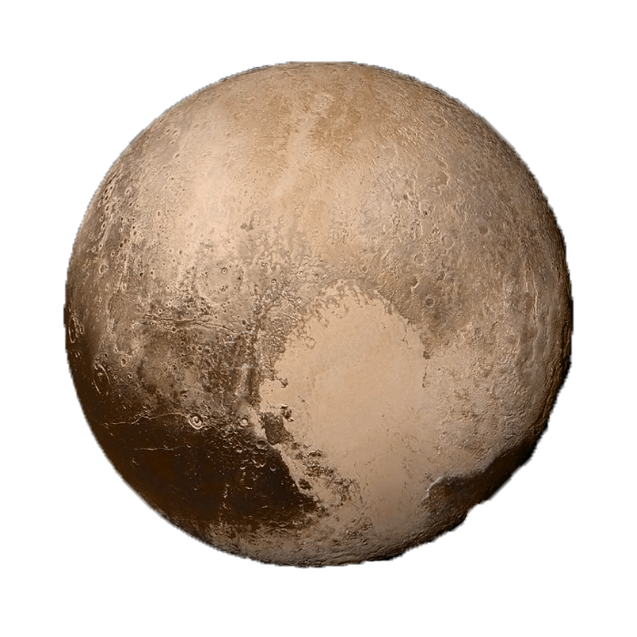

Pluto

Top 10 Facts!
- 1st dwarf planet from the sun until 2006
- It takes about 248 years for Pluto to make a full orbit around the sun
- Pluto was classified as a planet until 2006, in which it became classified as a dwarf planet
- Pluto is the largest dwarf planet in the Solar System
- A third of Pluto is made up of ice. That is more than all of the water in Earth’s oceans
- During its orbit, Pluto gets closer to the sun and some of the ice on its surface melts and forms an atmosphere
- Only one spacecraft has ever reached Pluto
- Sometimes Pluto is closer to the Sun than it is to Neptune
- A day on Pluto is equivalent to 6.4 Earth days
- The surface temperature on Pluto is an average of -229℃
Three Bonus Facts!
- Rings: Pluto might be the only dwarf planet in our solar system with rings
- Distance From The Sun: 3.67 billion mi
- Namesake: Named after a later name for Hades the greek god of the underworld
Satellite Info
Pluto has 5 natural moons
|